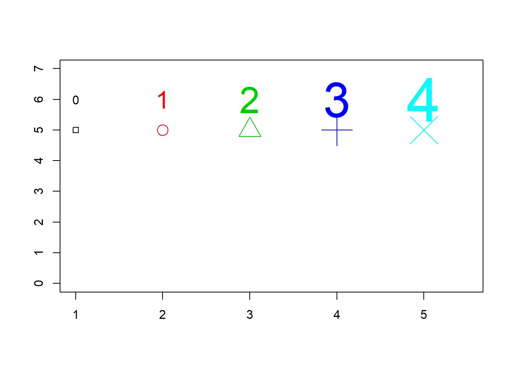
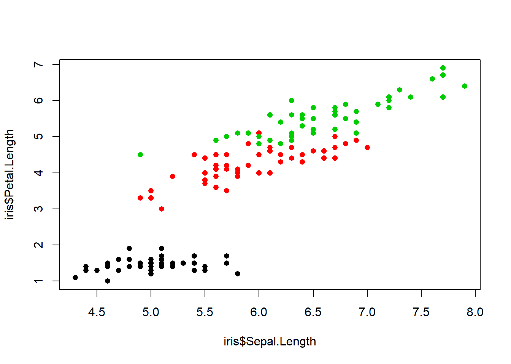
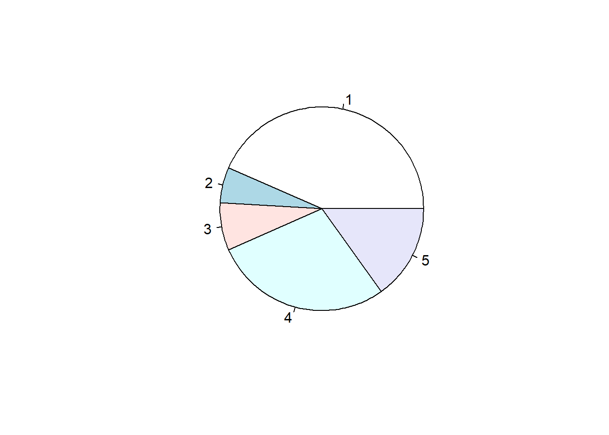

Dzień 1 - Bazowa grafika
Bazowa grafika
Wykres - plot
Funkcja plot w podstawowej wersji służy do generowania/rysowania wykresów.
Opis w dokumentacji - link
Ściągawka - link
wzrost <- c(145, 167, 178, 124, 150)
waga <- c(51, 68, 64, 43, 57)
plot(wzrost,waga)Ćwiczenie: potestuj różne typy zaznaczania danych.
plot(wzrost,waga, type = "l")Ważne jest uporządkowanie danych.
wzrost <- c(124, 145, 150, 167, 178)
waga <- c(43, 51, 57, 68, 64)
plot(wzrost,waga,type = "l")Jeśli chcemy narysować wykres funkcji, to najpierw musi stworzyć wektor argumentów (odciętych).
x <- seq(-2*pi,2*pi,0.1)
plot(x, sin(x))Przykład użycia różnych parametrów:
plot(x, sin(x), main="Wykres sinus- tytuł",sub="a tu jakiś podtytuł",xlab="tu mamy x",ylab="tu mamy sinus",type="l",col="blue")Lista wbudowanych kolorów to funkcja colors(). Użycie kolorów w systemie hex możliwe jest poprzez #AA4371. Jeśli mamy wartość rgp, możemy ją zmienić na poprzez polecenie rgb.
plot(x, sin(x), col="#AA4371")plot(x, sin(x), col=rgb(34,22,25,max=255))Plot - ćwiczenia
- Narysuj wykresy przykładowych funkcji, dopisz osie. Poćwicz różne kombinacje.
- Zrób wykres wybierając dwie kolumny ze zbioru
mtcars.
Plot a tabela.
Jeśli użyjemy plot na tabeli (w której mamy szereg rozdzielczy), to otrzymamy nieco inny wykres.
plot(table(mtcars$cyl))
Ćwiczenie: poćwicz różne parametry do funkcji.
Modyfikacja tytułu
Dodatkowo gdy potrzeba nam bardziej rozbudowanych podpisów możemy użyć funkcji title - link. Parametry graficzne są opisane tutaj.
Przykładowe użycia:
cars <- c(1, 3, 6, 4, 9)
plot(cars, type="o", col="blue")
title(main="Samochody", col.main="red", font.main=3)Parametry do czcionek: 1=plain, 2=bold, 3=italic, 4=bold italic, 5=symbol.
cars <- c(1, 3, 6, 4, 9)
plot(cars, type="o", col="blue")
title(xlab="Indeksy", col.lab="red")
Poprawka:
cars <- c(1, 3, 6, 4, 9)
plot(cars, type="o", col="blue", xlab="")
title(xlab="Indeksy", col.lab="red")
a<-c(1,2,3,4,5,6,7)
b<-c(23,3,2,4,5,2,-2)
plot(a,b,main="Wykres",axes=FALSE,type="o",col="blue",ann=FALSE)
axis(2, las=1, at=10*0:range(b)[2])
axis(1, at=1:7, lab=c("Pn","Wt","Śr","Czw","Pt","So","Nd"))
box()Tytuł - ćwiczenia
- Poćwicz samodzielnie różne kombinacje.
- Spróbuj odwzorować w kodzie poniższy wykres.

w1
Dodatkowe linie
Aby dorysować linię, mamy funkcję `lines’ - link.
x <- seq(-2*pi,2*pi,0.1)
plot(x, sin(x), type="l")
lines(x,cos(x), type="o", pch=22, lty=2,col="red")Możemy rysować więcej linii:
x <- seq(-2*pi,2*pi,0.1)
plot(x, sin(x), type="l")
lines(x,cos(x), type="o", pch=22, lty=2,col="red")
lines(x,rep(-0.5,length(x)), type="l", col="blue")Legenda
Kolejnym elementem do umieszczenia jest legenda. Używamy funkcji legend - link.
plot(x, sin(x),ylab="",type="l",col="blue")
lines(x,cos(x), col="red")
legend("topleft",c("sin(x)","cos(x)"),fill=c("blue","red"))
Przykład praktyczny
data(iris)
head(iris)## Sepal.Length Sepal.Width Petal.Length Petal.Width Species
## 1 5.1 3.5 1.4 0.2 setosa
## 2 4.9 3.0 1.4 0.2 setosa
## 3 4.7 3.2 1.3 0.2 setosa
## 4 4.6 3.1 1.5 0.2 setosa
## 5 5.0 3.6 1.4 0.2 setosa
## 6 5.4 3.9 1.7 0.4 setosaplot(iris$Sepal.Length, iris$Petal.Length, col = iris$Species)
plot(iris$Sepal.Length, iris$Petal.Length, col = iris$Species, pch = 15)plot(iris$Sepal.Length, iris$Petal.Length, col = iris$Species, pch = "A")plot(iris$Sepal.Length, iris$Petal.Length, col = iris$Species, pch = 21, bg = "blue")plot(iris$Sepal.Length, iris$Petal.Length, col = iris$Species, pch = 16)plot(iris$Sepal.Length, iris$Petal.Length, col = iris$Species, pch = 16, cex = 2)
levels(iris$Species)## [1] "setosa" "versicolor" "virginica"plot(iris$Sepal.Length, iris$Petal.Length,
col = iris$Species,
pch = 16,
cex = 2)
legend(x = 4.5, y = 7, legend = levels(iris$Species), col = c(1:3), pch = 16)Wykres słupkowy - bar chart
urlopy<- c(23,3,4,15,8)
barplot(urlopy)barplot(urlopy, main="Urlopy", xlab="Miesiące",
ylab="Łącznie", names.arg=c("Sty","Lut","Mar","Kwi","Maj"),
border="pink", density=c(10,40,30,20,50))
urlopy<- matrix( c(2, 4, 8, 1,4, 5, 7,11,3,24,12,9), nrow=3, ncol=4)
barplot(urlopy, main="Urlopy", ylab= "Razem",
beside=TRUE, col=rainbow(5))
legend("topleft", c("1Q","2Q","3Q","4Q"), cex=0.6,
bty="n", fill=rainbow(5));barplot(t(urlopy), main="Urlopy", ylab="Razem",
col=heat.colors(3), space=0.1, cex.axis=0.8, las=1,
names.arg=c("A","B","C"), cex=0.8)
legend("top", c("1Q","2Q","3Q","4Q"), cex=0.8, fill=heat.colors(3));
Histogram
urlopy<- c(23,3,4,15,8)
hist(urlopy)
Wykres kołowy - pie chart
urlopy<- c(23,3,4,15,8)
pie(urlopy)
pie(urlopy, main="urlopy", col=rainbow(length(urlopy)),
labels=c("A","B","C","D","E"))
Dotchat - wykres kropkowy
urlopy<- c(23,3,4,15,8)
dotchart(urlopy)
Pary wykresów - pairs
pairs(iris)Mapy
library(sp)
gadm <- readRDS("gadm36_POL_1_sp.rds")
plot(gadm)
myColours <- rep("forestgreen", 16)
myColours[5] <- "red"
plot(gadm, col = myColours, border = 'grey')